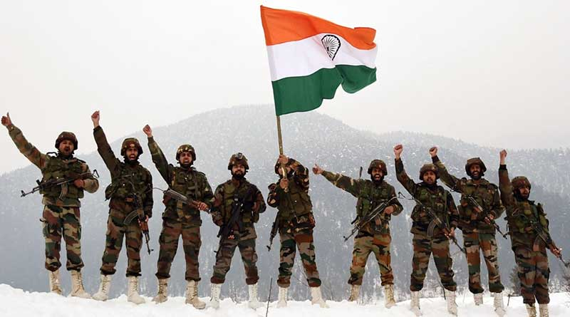
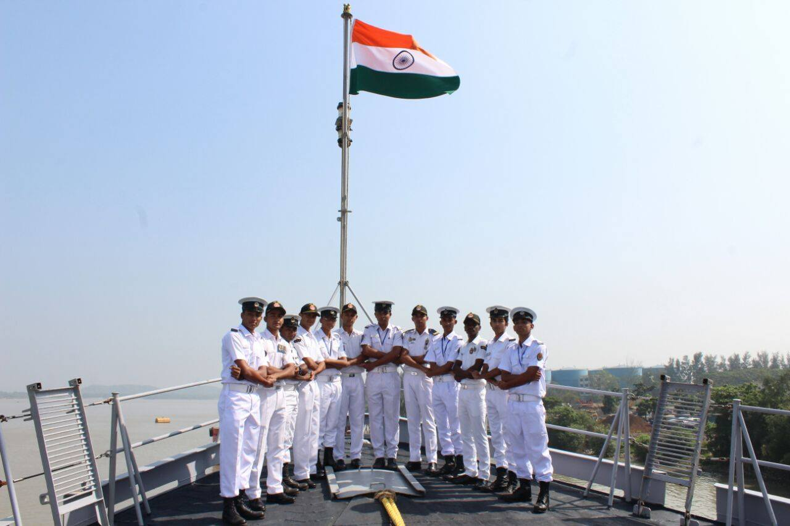
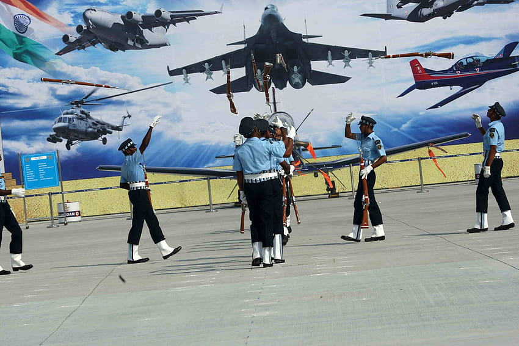
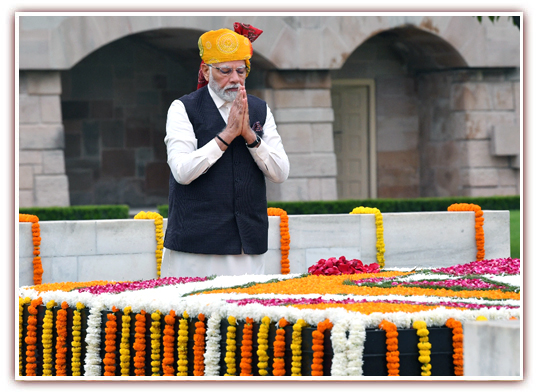
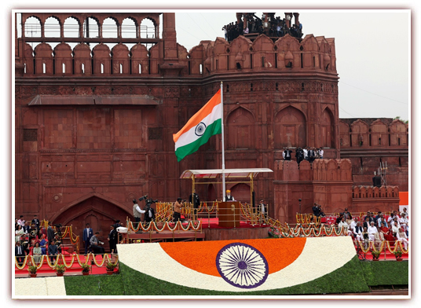
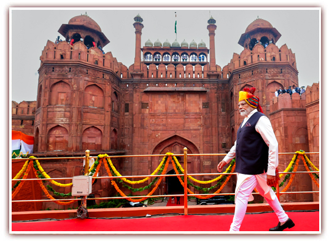
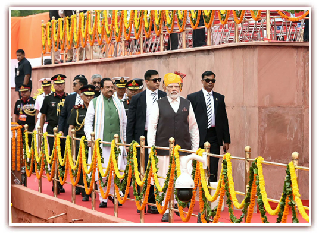
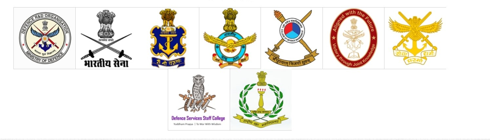

The Independence Day of India, which is celebrated religiously throughout the Country on the 15th of August every year, holds tremendous ground in the list of national days, since it reminds every Indian about the dawn of a new beginning, the beginning of an era of deliverance from the clutches of British colonialism of more than 200 years. It was on 15th August 1947 that India was declared independent from British colonialism, and the reins of control were handed over to the leaders of the Country. India's gaining of independence was a tryst with destiny, as the struggle for freedom was a long and tiresome one, witnessing the sacrifices of many freedom fighters, who laid down their lives on the line.
GALLARY







INDIAN FORCES

My India my Pride
India is one of the oldest civilizations in the world, spanning a period of more than 4000 years, and witnessing the fusion of several customs and traditions, which are reflective of the rich culture and heritage of the Country.
The history of the nation gives a glimpse into the magnanimity of its evolution - from a Country reeling under colonialism, to one of the leading economies in the global scenario. More than anything, the nationalistic fervour of the people is the contributing force behind the culmination of such a development. This transformation of the nation instills a sense of national pride in the heart of every Indian within the Country and abroad, and this section is a modest attempt at keeping its flame alive.